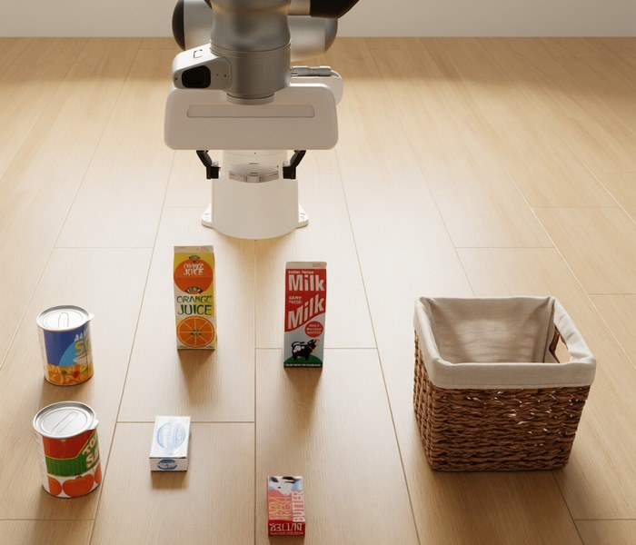
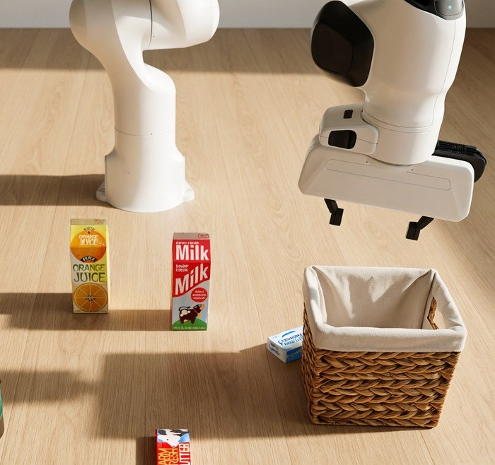
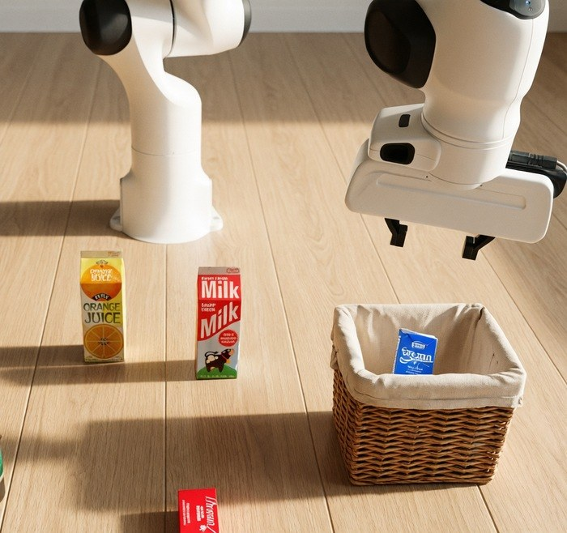
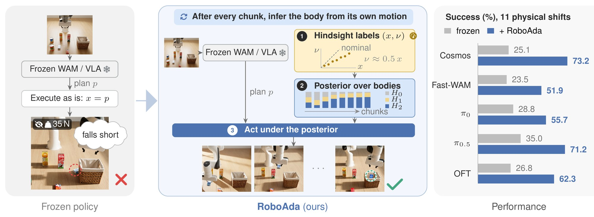
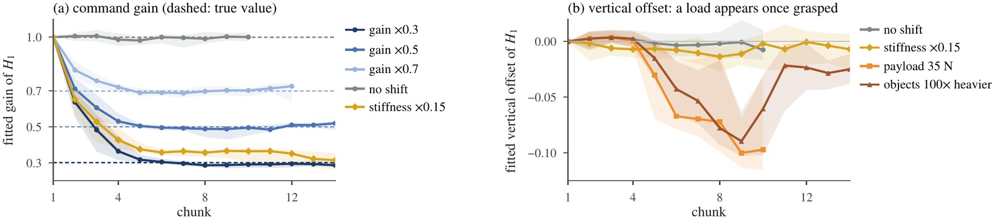
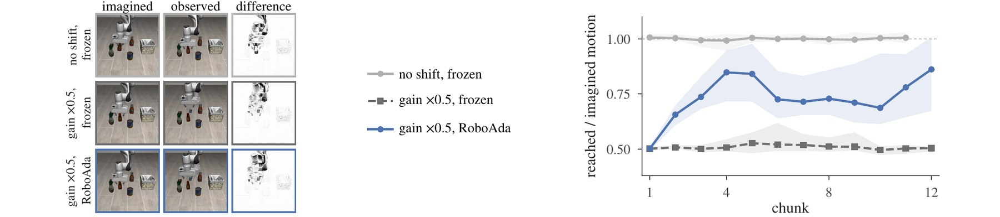

The plan is right. The body is not.
A full mug looks like an empty one, a block that looks wooden may be made of iron, and a worn joint looks like a healthy one. A robot policy plans under the physics of its training data, so on a changed body its plan is often still right while the commands that carry it out fall short.
RoboAda keeps the policy and its plan unchanged and corrects the commands, by inferring after every action chunk how this robot now turns commands into motion. It needs no reward, no gradient step and no data from the changed robot, and it wraps world action models and vision-language-action models alike.



How it works
-
Hindsight labels
An inverse-dynamics model of the unchanged robot reads the proprioception and returns, for every executed step, the command the unchanged robot would have needed for the motion that happened. On a changed robot these labels differ from the commands that were sent, at no extra cost.
-
A posterior over bodies
Per action axis, three hypotheses explain the labels: the nominal body, an affine body and a state-dependent body. Each is fitted in closed form and weighted by how well it predicted every new label before seeing it.
-
Act under the posterior
Each planned step is sent as the command that minimizes the expected tracking error under the weighted hypotheses. Uncertain hypotheses correct less, and when nothing has changed the nominal body keeps the weight and the plan goes through almost unchanged.

Results
Success rate on LIBERO under eleven physical shifts: command gain, a gain drop, stiffness, latency, constant and per-episode offsets, a downward force, a payload while grasping and two weakened joints. Every policy runs frozen and with RoboAda on the same episodes.
- Average over the five policies
- 27.8% → 62.9%
- Objects 100× heavier than they look
- 59.0% → 72.4%
- Against seven test-time adaptation methods, Cosmos Policy
- best 52.3%, RoboAda 69.6%
- Physical shifts on top of LIBERO-Plus, LIBERO-PRO, LIBERO-MAX
- 21.1 → 52.0, 17.6 → 40.0, 13.5 → 35.6
- Bimanual RoboTwin 2.0, joint-space commands
- 24.9% → 78.8%
Rollouts
Each clip shows the frozen policy on the left and the same policy with RoboAda on the right, from the same initial state under the same hidden change.
What the camera misses
The same recorded commands, replayed on the normal robot and on a changed one. The faint arm and the white path are the normal robot; the solid arm and the orange path, the changed robot. Nothing in the first frame tells them apart.
The posterior identifies the change
Under a command gain of 0.3, 0.5 or 0.7, the fitted gain reaches the true value within four to six chunks. A payload or heavier objects appear as a downward offset that sets in only once the object is held.

A world action model's own imagination registers the change too: under half the command gain, the frozen robot reaches half of the motion the model imagines, and RoboAda recovers most of it within four chunks.

Code
The release is numpy only. A simulator-free quickstart runs in a few seconds, and your own policy plugs in through a Python function, an HTTP endpoint or an openpi server.
git clone https://github.com/RoboAda/RoboAda.git
cd RoboAda && pip install -e .
python examples/quickstart.pyCitation
@misc{zhang2026roboada,
title = {RoboAda: Adapting Frozen Robot Policies at Test Time to Physics They Cannot See},
author = {Zhang, Yunbei and Jin, Zijian and Niu, Shuaicheng and Chen, Baian and Ye, Weirui and Hamm, Jihun and Du, Yilun},
year = {2026}
}